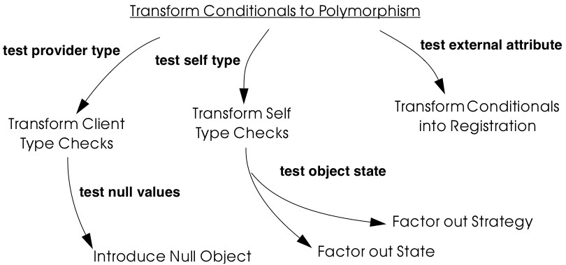
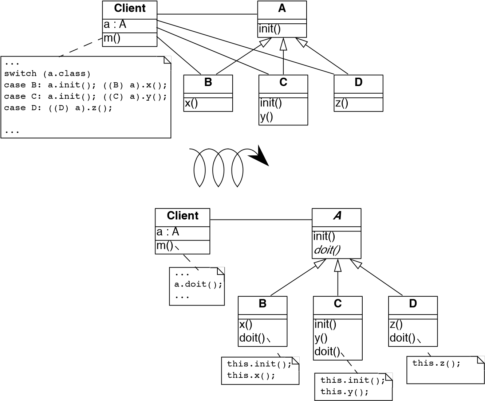
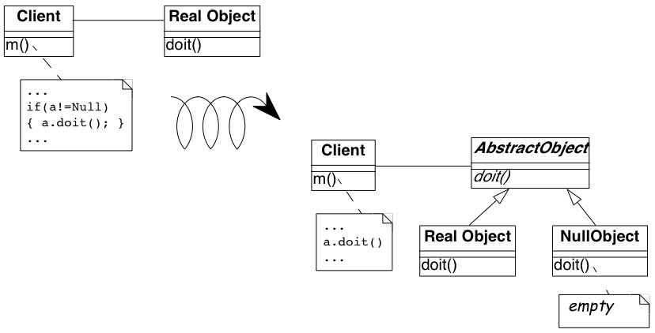

10. Transform Conditionals to Polymorphism
After duplicated code, data containers and god classes, one of the most striking signs of misplaced responsibilities in object-oriented software is the occurrence of large methods consisting almost entirely of case statements that test the type of some argument.
Although case statements are not inherently bad, in object-oriented code they are frequently a sign that the object doing the testing is assuming responsibilities that would better be distributed to the objects being tested. Big conditionals arise naturally over time, just as duplicated code does. As the software is adapted to handle new cases, these cases pop up as conditionals in the code. The problem with these big conditionals is that they can make the code much more fragile in the long term.
Forces
The following forces are at play:
-
As requirements change over time, classes in a software system will have to be adapted to handle new, special cases.
-
Adding new classes or subclasses to a system clutters the namespace.
-
The quickest way to adapt a working piece of software to handle a new requirement, is often to add a conditional test for the special case at some point in the code.
245
-
Over time, a simple design tends to get cluttered with many conditional tests for special cases.
-
Case statements group all the variants into a single place instead of spreading the different cases across different classes. However, they lead to design that is less flexible if the case statement appears in more than one place.
-
In some programming languages, case statements are a more conventional idiom to implement varying behavior than polymorphism.
Large conditionals are often a sign that behavior implemented by clients should probably be be shifted to the provider classes. Typically a new method will be introduced to the provider hierarchy, and the individual cases of the conditional statement will each move to one of the provider classes.
Although the symptom is readily recognizable, the technical details and the preferred solution may differ considerably. In particular, when the provider hierarchy already exists, and the conditions explicitly check the class of the provider instance, the refactoring is relatively straightforward. But often the provider hierarchy does not exist, and the conditions test attributes that only implicitly model type information. Furthermore, the conditionals may occur not only in external clients, but even in the provider hierarchy itself.
Overview
Transform Conditionals to Polymorphism is a pattern language that describes how to redistribute responsibilities to eliminate these large conditionals, thereby reducing coupling between classes, and improving flexibility in the face of future changes.
This pattern language consists of six patterns which address the most common problems that occur when conditionals are used to simulate polymorphism. Transform Self Type Checks and Transform Client Type Checks address the most typical cases that arise when explicit type checks are performed. Transform Conditionals into Registration occurs less frequently. We also include Factor out State, Factor out Strategy and Introduce Null Object, not in order to copy three established design patterns (State [p. 295], Strategy [p. 295] and Null Object [p. 294]) but rather to show how these design patterns may apply in a reengineering context to eliminate type-checking conditionals.
Figure 10.1 summarizes the relationships and the differences between the patterns.

Figure 10.1: Relationships between the patterns constituting Transform Conditionals to Polymorphism.
-
Transform Self Type Checks eliminates conditionals over type information in a provider class by introducing subclasses for each type case. The conditional code is replaced by a single polymorphic method call to an instance of one of the new subclasses.
-
Transform Client Type Checks transforms conditionals over type information in a client class by introducing a new method to each of the provider classes. The conditional is replaced by a single polymorphic call to the new method.
-
Factor out State handles a special case of Transform Self Type Checks in which the type information that is being tested may change dynamically. A State [p. 295] object is introduced in the provider class to model the changing state, and the conditional is replaced by a call to a method of the new State object.
-
Factor out Strategy is another special case of Transform Self Type Checks in which the algorithms to handle the various provider cases is factored out by introducing a new Strategy [p. 295] object. The key difference with Factor out State is that the algorithm rather than the state may vary dynamically.
-
Introduce Null Object addresses the special case of Transform Client Type Checks in which the test performed checks whether or not the provider is defined. The conditional is eliminated by introducing a Null Object [p. 294] which implements the appropriate default behavior.
-
Transform Conditionals into Registration addresses the situation in which the conditional is responsible for starting up an external tool based on some attribute of an object to be handled. The solution is to introduce a lookup service where tools are registered as plug-ins. The conditional is then replaced by a simple lookup for the registered plug-in. The solution is then fully dynamic because new plug-ins can be added or removed without any changes to the tool users.
10.1 Transform Self Type Checks
Intent _Improve the extensibility of a class by replacing a complex conditional statement with a call to a hook method implemented by subclasses.
Problem
A class is hard to modify or extend because it bundles multiple possible behaviors in complex conditional statements that test some attribute representing the current “type” of the object.
This problem is difficult because: * Conceptually simple extensions require many changes to the conditional code. * Subclassing is next to impossible without duplicating and adapting the methods containing the conditional code. * Adding a new behavior always results in changes to the same set of methods and always results in adding a new case to the conditional code.
Yet, solving this problem is feasible because: * Self type checks simulate polymorphism. The conditional code tells you what subclasses you should have instead.
Solution
Identify the methods with complex conditional branches. In each case, replace the conditional code with a call to a new hook method. Identify or introduce subclasses corresponding to the cases of the conditional. In each of these subclasses, implement the hook method with the code corresponding to that case in the original case statement.
Detection
Most of the time, the type discrimination will jump in your face while you are working on the code, so this means that you will not really need to detect where the checks are made. However, it can be interesting to have simple techniques to quickly assess if unknown parts of a system suffer from similar practices. This can be a valuable source of information to evaluate the state of a system.
-
Look for long methods with complex decision structures on some immutable attribute of the object that models type information. In particular look for attributes that are set in the constructor and never changed.
-
Attributes that are used to model type information typically take on values from some enumerated type, or from some finite set of constant values. Look for constant definitions whose names represent entities or concepts that one would usually expect to be associated to classes (like RetiredEmployee or PendingOrder). The conditionals will normally just compare the value of a fixed attribute to one of these constant values.
-
Especially look for classes where multiple methods switch on the same attribute. This is another common sign that the attribute is being used to simulate a type.
-
Since methods containing case statements tend to be long, it may help to use a tool that sorts methods by lines of code or visualizes classes and methods according to their size. Alternatively, search for classes or methods with a large number of conditional statements.
-
For languages like C++ or Java where it is common to store the implementation of a class in a separate file, it is straightforward to search for and count the incidence of conditional keywords (if, else, case, etc.). On a UNIX system, for example,
grep 'switch' find . --name "*.cxx" --print
enumerates all the files in a directory tree with extension .cxx that contain a switch. Other text processing tools like agrep offer possibilities to pose finer granularity queries. Text processing languages like Perl may be better suited for evaluating some kinds of queries, especially those that span multiple lines. * C/C++: Legacy C code may simulate classes by means of union types. Typically the union type will have one data member that encodes the actual type. Look for conditional statements that switch on such data members to decide which type to cast a union to and which behavior to employ.
In C++ it is fairly common to find classes with data members that are declared as void pointers. Look for conditional statements that cast such pointers to a given type based on the value of some other data member. The type information may be encoded as an enum or (more commonly) as a constant integer value.
-
Ada: Because Ada 83 did not support polymorphism (or subprogram access types), discriminated record types are often used to simulate
Figure 10.2: Transformation of explicit type check into self polymorphic method calls.
polymorphism. Typically an enumeration type provides the set of variants and the conversion to polymorphism is straightforward in Ada95.
-
Smalltalk: Smalltalk provides only a few ways to manipulate types. Look for applications of the methods isMemberOf: and isKindOf:, which signal explicit type-checking. Type checks might also be made with tests like self class = anotherClass, or with property tests throughout the hierarchy using methods like isSymbol, isString, isSequenceable, isInteger.
Steps
-
Identify the class to transform and the different conceptual classes that it implements. An enumeration type or set of constants will probably document this well.
-
Introduce a new subclass for each behavior that is implemented (see Figure 10.2). Modify clients to instantiate the new subclasses rather than the original class. Run the tests.
-
Identify all methods of the original class that implement varying behavior by means of conditional statements. If the conditionals are surrounded by other statements, move them to separate, protected hook methods. When each conditional occupies a method of its own, run the tests.
-
Iteratively move the cases of the conditionals down to the corresponding subclasses, periodically running the tests.
-
The methods that contain conditional code should now all be empty. Replace these by abstract methods and run the tests.
-
Alternatively, if there are suitable default behaviors, implement these at the root of the new hierarchy.
-
If the logic required to decide which subclass to instantiate is nontrivial, consider encapsulating this logic as a factory method of the new hierarchy root. Update clients to use the new factory method and run the tests.
Tradeoffs
Pros
-
New behaviors can now be added in a incremental manner, without having to change a set of methods of a single class containing all the behavior. A specific behavior can now be understood independently from the other variations.
-
A new behavior represents its data independently from the others, thereby minimizing the possible interference and increasing the understandability of the separated behaviors.
-
All behaviors now share a common interface, thereby improving their readability.
Cons
-
All the behaviors are now dispersed into multiple but related abstractions, so getting an overview of the behavior may be more difficult. However, the concepts are related and share the interface represented by the abstract class reducing then the problem.
-
The larger number of classes makes the design more complex, and potentially harder to understand. If the original conditional statements are simple, it may not be worthwhile to perform this transformation.
-
Explicit type checks are not always a problem and we can sometimes tolerate them. Creating new classes increases the number of abstractions in the applications and can clutter namespaces. Hence, explicit type checks may be an alternative to the creation of new classes when:
Figure 10.3: Combining simple delegation and Transform Self Type Checks when the class cannot be subclassed.
-
the set over which the method selection is fixed and will not evolve in the future, and
-
the type check is only made in a few places.
Difficulties
-
Since the requisite subclasses do not yet exist, it can be hard to tell when conditionals are being used to simulate multiple types.
-
Wherever instances of the transformed class were originally created, now instances of different subclasses must be created. If the instantiation occurred in client code, that code must now be adapted to instantiate the right class. Factory objects or methods may be needed to hide this complexity from clients.
-
If you do not have access to the source code of the clients, it may be difficult or impossible to apply this pattern since you will not be able to change the calls to the constructors.
-
If the case statements test more than one attribute, it may be necessary to support a more complex hierarchy, possibly requiring multiple inheritance. Consider splitting the class into parts, each with its own hierarchy.
-
When the class containing the original conditionals cannot be subclassed, Transform Self Type Checks can be composed with delegation. The idea is to exploit polymorphism on another hierarchy by moving part of the state and behavior of the original class into a separate class to which the method will delegate, as shown in Figure 10.3.
When the legacy solution is the solution
There are some situations in which explicit type-checks may nevertheless be the right solution:
-
The conditional code may be generated from a special tool. Lexical analysers and parsers, for example, may be automatically generated to contain the kind of conditional code we are trying to avoid. In these cases, however, the generated classes should never be manually extended, but simply regenerated from the modified specifications.
Example
We worked on a complex system that controls large, physical machines by sending them messages. These messages are represented by the class Message and can be of different types.
| a| class Message \{ public:
_Message();
set_value(char* text); set_value(int action); void send(Channel c); void receive(Channel c); … private: void* data_; int type_;
static const int TEXT = 1; static const int ACTION = 2;
… }
a|
Message::send(Channel c) \{ switch (type_) \{ case TEXT:
-
case ACTION:
…
} } void Client1::doit() \{ …
Message * myMessage = new Message();
myMessage→set_Value("…");
…
}
|
Figure 10.4: Initial design and source code.
Before.
A message class wraps two different kinds of messages (TEXT and ACTION) that must be serialized to be sent across a network connection as shown in the code and the figure. We would like to be able to send a new kind of message (say VOICE), but this will require changes to several methods of Message as shown in Figure 10.4.
| a| virtual void send(Channel c) = 0; virtual void receive(Channel c) = 0;
…
};
class Text_Message: public Message
\{ public:
Text_Message(char* text); void send(Channel c); void receive(Channel c); private: char* text;
…
};
a| public:
Action_Message(int action); void send(Channel c); void receive(Channel c); private: int action;
…
};
void Client1::doit() \{ …
Message * myMessage = new
Text_Message("…"); … }
|
Figure 10.5: Resulting hierarchy and source code.
After.
Since Message conceptually implements two different classes, Text_Message and Action_Message, we introduce these as subclasses of Message, as shown in Figure 10.5. We introduce constructors for the new classes, we modify the clients to construct instances of Text_Message and Action_Message rather than Message, and we remove the set_value() methods. Our regression tests should run at this point.
Now we find methods that switch on the type variable. In each case, we move the entire case statement to a separate, protected hook method, unless the switch already occupies the entire method. In the case of send(), this is already the case, so we do not have to introduce a hook method. Again, all our tests should still run.
Now we iteratively move cases of the case statements from Message to its subclasses. The TEXT case of Message::send() moves to Text_Message::send() and the ACTION case moves to Action_Message::send(). Every time we move such a case, our tests should still run.
Finally, since the original send() method is now empty, it can be redeclared to be abstract (i.e.,virtual void send(Channel) = 0). Again, our tests should run.
Rationale
Classes that masquerade as multiple data types make a design harder to understand and extend. The use of explicit type checks leads to long methods that mix several different behaviors. Introducing new behavior then requires changes to be made to all such methods instead of simply specifying one new class representing the new behavior.
By transforming such classes to hierarchies that explicitly represent the multiple data types, you improve cohesion by bringing together all the code concerning a single data type, you eliminate a certain amount of duplicated code (i.e., the conditional tests), and you make your design more transparent, and consequently easier to maintain.
Related Patterns
In Transform Self Type Checks the condition to be transformed tests type information that is represented as an attribute of the class itself.
If the conditional tests mutable state of the host object, consider instead applying Factor out State [p. 266], or possibly Factor out Strategy [p. 270].
If the conditional occurs in a client rather than in the provider class itself, consider applying Transform Client Type Checks [p. 257].
If the conditional code tests some type attribute of a second object in order to select some third handler object, consider instead applying Transform Conditionals into Registration [p. 277].
10.2 Transform Client Type Checks
Intent _Reduce client/provider coupling by transforming conditional code that tests the type of the provider into a polymorphic call to a new provider method.
Problem
How do you reduce the coupling between clients and providers of services, where the clients explicitly check the type of providers and have the responsibility to compose providers code?
This problem is difficult because: * Adding a new subclass to the provider hierarchy requires making changes to many clients, especially where the tests occur. * Clients and providers will tend to be strongly coupled, since clients are performing actions that should be the responsibility of the providers.
Yet, solving this problem is feasible because: * The conditionals tell you to which classes you should transfer behavior.
Solution
Introduce a new method to the provider hierarchy. Implement the new method in each subclass of the provider hierarchy by moving the corresponding case of the clients conditional to that class. Replace the entire conditional in the client by a simple call to the new method.
Detection
Apply essentially the same techniques described in Transform Self Type Checks to detect case statements, but look for conditions that test the type of a separate service provider which already implements a hierarchy. You should also look for case statements occurring in different clients of the same provider hierarchy.
-
_C:_ Legacy C code is not likely to make use of run-time type information (RTTI). Instead, type information will likely be encoded
in a data member that takes its value from some enumerated type representing the current class. Look for client code switching on such data members.
-
Ada: Detecting type tests falls into two cases. If the hierarchy is implemented as a single discriminated record then you will find case statements over the discriminant. If the hierarchy is implemented with tagged types then you cannot write a case statement over the types (they are not discrete); instead an if-then-else structure will be used.
-
Smalltalk: As in Transform Self Type Checks, look for applications of isMemberOf: and isKindOf:, and tests like self class = anotherClass.
-
Java: Look for applications of the operator instanceof, which tests membership of an object in a specific, known class. Although classes in Java are not objects as in Smalltalk, each class that is loaded into the virtual machine is represented by a single instance of java.lang.Class. It is therefore possible to determine if two objects, x and y belong to the same class by performing the test:
x.getClass() == y.getClass()
Alternatively, class membership may be tested by comparing class names:
x.getClass().getName().equals(y.getClass().getName())
Steps
-
Identify the clients performing explicit type checks.
-
Add a new, empty method to the root of the provider hierarchy representing the action performed in the conditional code (see Figure 10.6).
-
Iteratively move a case of the conditional to some provider class, replacing it with a call to that method. After each move, the regression tests should run.
-
When all methods have been moved, each case of the conditional consists of a call to the new method, so replace the entire conditional by a single call to the new method.
-
Consider making the method abstract in the provider’s root. Alternatively implement suitable default behavior here.
_ Figure 10.6: Transformation of explicit type check used to determine which methods of a client should be invoked into polymorphic method calls.
Other Steps to Consider
-
It may well be that multiple clients are performing exactly the same test and taking the same actions. In this case, the duplicated code can be replaced by a single method call after one of the clients has been transformed. If clients are performing different tests or taking different actions, then the pattern must be applied once for each conditional.
-
If the case statement does not cover all the concrete classes of the provider hierarchy, a new abstract class may need to be introduced as a common superclass of the concerned classes. The new method will then be introduced only for the relevant subtree. Alternatively, if it is not possible to introduce such an abstract class given the existing inheritance hierarchy, consider implementing the method at the root with either an empty default implementation, or one that raises an exception if it is called for an inappropriate class.
-
If the conditionals are nested, the pattern may need to be applied recursively.
Tradeoffs
Pros
-
The provider hierarchy offers a new, polymorphic service available to other clients as well.
-
The code of the clients is now better organized and does not have to deal anymore with concerns that are now under the responsibility of the provider.
-
All the code concerning the behavior of a single provider is now together in a single location.
-
The fact that the provider hierarchy offers a uniform interface allows providers to be modified without impacting clients.
Cons
-
Sometimes it is convenient to see the code handling different cases in a single location. Transform Client Type Checks redistributes the logic to the individual provider classes, with the result that the overview is lost. ===== Difficulties
-
Normally instances of the provider classes should be already have been created so we do not have to look for the creation of the instances, however refactoring the interface will affect all clients of the provider classes and must not be undertaken without considering the full consequences of such an action.
When the legacy solution is the solution
Client type checks may nevertheless be the right solution when the provider instance does not yet exist or when its class cannot be extended:
-
An Abstract Factory [p. 293] object may need to test a type variable in order to know which class to instantiate. For example, a factory may stream objects in from a text file representation, and test some variable that tells it which class the streamed object should belong to.
-
Software that interfaces to a non-object-oriented library, such as a legacy GUI library, may force the developer to simulate the dispatch manually. It is questionable whether, in such cases, it is cost-effective to develop an object-oriented facade to the procedural library.
-
If the provider hierarchy is frozen (e.g., because the source code is not available), then it will not be possible to transfer behavior to the provider classes. In this case, wrapper classes may be defined to extend the behavior of the provider classes, but the added complexity of defining the wrappers may overwhelm any benefits.
Example
Before
The following C++ code illustrates misplaced responsibilities since the client must explicitly type check instances of Telephone to determine what action to perform. The code in bold highlights the difficulties with this approach.
| a| class Telephone \{ public:
enum PhoneType \{
POTSPHONE, ISDNPHONE, OPERATORPHONE
};
Telephone() \{}
PhoneType phoneType() \{ return myType; }
private:
PhoneType myType; protected:
void setPhoneType(PhoneType newType) \{ myType = newType; } };
class POTSPhone : public Telephone \{
public:
POTSPhone() \{ setPhoneType(POTSPHONE); } void tourneManivelle();
void call(); };
…
|
| a| class ISDNPhone: public Telephone \{ public:
_ISDNPhone() \{ setPhoneType(ISDNPHONE);} void initializeLine();
void connect(); }; …
class OperatorPhone: public Telephone \{ public:
OperatorPhone() \{ setPhoneType(OPERATORPHONE); }
void operatorMode(bool onOffToggle); void call();
};
void initiateCalls(Telephone ** phoneArray, int numOfCalls) \{ for(int i = 0; i<numOfCalls ;i++ ) \{ Telephone * p = phoneArray[i];
switch(p-→phoneType()) \{ case Telephone::POTSPHONE: \{ POTSPhone *potsp = (POTSPhone *) p;
potsp-→tourneManivelle();
potsp-→call(); break;
}
case Telephone::ISDNPHONE: \{ ISDNPhone *isdnp = (ISDNPhone *) p;
isdnp-→initializeLine(); isdnp-→connect(); break;
}
case Telephone::OPERATORPHONE: \{ OperatorPhone *opp = (OperatorPhone *) p;
opp-→operatorMode(true);
opp-→call();
break;
} default: cerr << "Unrecognized Phonetype" << endl;
};
}
}
|
Figure 10.7: Transforming explicit type checks to polymorphic method invocations.
After
After applying the pattern the client code will look like the following. (See also Figure 10.7.)
| a| class Telephone \{ public:
Telephone() \{}
virtual void makeCall() = 0; };
Class POTSPhone : public Telephone \{ void tourneManivelle();
void call();
public:
POTSPhone() \{} void makeCall(); };
void POTSPhone::makeCall() \{ this-→tourneManivelle();
this-→call();
}
class ISDNPhone: public Telephone \{
a| void initializeLine(); void connect();
public:
ISDNPhone() \{ } void makeCall();
};
void ISDNPhone::makeCall() \{ this-→initializeLine();
this-→connect();
}
class OperatorPhone: public Telephone \{ void operatorMode(bool onOffToggle); void call();
public:
_OperatorPhone() \{ }
void makeCall(); };
void OperatorPhone::makeCall() \{ this-→operatorMode(true); this-→call();
}
void initiateCalls(Telephone ** phoneArray, int numOfCalls) \{ for(int i = 0; i<numOfCalls ;i++ ) \{ phoneArray[i]-→makeCall();
}
}
|
Rationale
Riel states, “Explicit case analysis on the type of an object is usually an error. The designer should use polymorphism in most of these cases” [Rie96]. Indeed, explicit type checks in clients are a sign of misplaced responsibilities since they increase coupling between clients and providers. Shifting these responsibilities to the provider will have the following consequences:
-
The client and the provider will be more weakly coupled since the client will only need to explicitly know the root of the provider hierarchy instead of all of its concrete subclasses.
-
The provider hierarchy may evolve more gracefully, with less chance of breaking client code.
-
The size and complexity of client code is reduced. The collaborations between clients and providers become more abstract.
-
Abstractions implicit in the old design (i.e., the actions of the conditional cases) will be made explicit as methods, and will be available to other clients.
-
Code duplication may be reduced (if the same conditionals occur multiply).
Related Patterns
InTransform Client Type Checks the conditional is made on the type information of a provider class. The same situation occurs in Introduce Null Object where the conditional tests over null value before invoking the methods. From this point of view, Introduce Null Object is a specialization of Transform Client Type Checks.
Transform Conditionals into Registration handles the special case in which the client’s conditional is used to select a third object (typically an external application or tool) to handle the argument.
Replace Conditional with Polymorphism [p. 292] is the core refactoring of this reengineering pattern, so the reader may refer to the steps described in [FBB+99].
10.3 Factor out State
Intent _Eliminate complex conditional code over an object’s state by applying the State design pattern.
Problem
How do you make a class whose behavior depends on a complex evaluation of its current state more extensible?
This problem is difficult because: * There are several complex conditional statements spread out over the methods of the object. Adding new behavior may affect these conditionals in subtle ways. * Whenever new possible states are introduced, all the methods that test state have to be modified.
Yet, solving this problem is feasible because: * The object’s instance variables are typically used to model different abstract states, each of which has its own behavior. If you can identify these abstract states, you can factor the state and the behavior out into a set of simpler, related classes.
Solution
Apply the State [p. 295] pattern, i.e., encapsulate the state-dependent behavior into separate objects, delegate calls to these objects and keep the state of the object consistent by referring to the right instance of these state objects (see figure 47).
As in Transform Self Type Checks, transform complex conditional code that tests over quantified states into delegated calls to state classes. Apply the State [p. 295] pattern, delegating each conditional case to a separate State object. We invite the reader to read State and State Patterns [p. 295] for a deep description of the problem and discussion [GHJV95] [ABW98] [DA97]. Here we only focus on the reengineering aspects of the pattern.
Steps
-
Identify the interface of a state and the number of states.
Figure 10.8: Transformation to go from a state pattern simulated using explicit state conditional to a situation where the state pattern has been applied.
If you are lucky, each conditional will partition the state space in the same way, and the number of states will equal the number of cases in each conditional. In case the conditionals overlap, a finer partitioning will be required.
The interface of a state depends on how the state information is accessed and updated, and may need to be refined in the subsequent steps.
-
Create a new abstract class, State, representing the interface of the state.
-
Create a new class subclass of State for each state.
-
Define methods of the interface identified in Step 1 in each of the state classes by copying the corresponding code of the conditional to the new method. Do not forget to change the state of the instance variable in the Context to refer to the right instance of State class. The State methods have the responsibility to change the Context so that it always refers to the next state instance.
-
Add a new instance variable in the Context class.
-
You may have to have a reference from the State to the Context class to invoke the state transitions from the State classes.
-
Initialize the newly created instance to refer to a default state class instance.
-
Change the methods of the Context class containing the tests to delegate the call to the instance variable.
Step 4 can be performed using the Extract Method operation of the Refactoring Browser. Note that after each step, the regression tests should still run. The critical step is the last one, in which behavior is delegated to the new state objects.
Tradeoffs
Pros
-
Limited Impact. The public interface of the original class does not have to change. Since the state instances are accessed by delegation from the original object, the clients are unaffected. In the straightforward case the application of this pattern has a limited impact on the clients. ===== Cons
-
The systematic application of this pattern may lead to an explosion in the number of classes.
-
This pattern should not be applied when:
-
there are too many possible states, or the number of states is not fixed
-
it is hard to determine from the code how and when state transitions occur.
-
-
When the legacy solution is the solution
This pattern should not be applied lightly.
-
When the states are clearly identified and it is known that they will not be changed, the legacy solution has the advantage of grouping all the state behavior by functionality instead of spreading it over different subclasses.
-
In certain domains, such as parsers, table-driven behavior, encoded as conditionals over state, are well-understood, and factoring out the state objects may just make the code harder to understand, and hence to maintain.
10.4 Factor out Strategy
Intent _Eliminate conditional code that selects a suitable algorithm by applying the Strategy design pattern.
Problem
How do you make a class whose behavior depends on testing the value of some variable more extensible?
This problem is difficult because: * New functionality cannot be added without modifying all the methods containing the conditional code. * The conditional code may be spread over several classes which make similar decisions about which algorithm to apply.
Yet, solving this problem is feasible because: * The alternative behaviors are essentially interchangeable.
Solution
Apply the Strategy pattern, i.e., encapsulate the algorithmic dependent behavior into separate objects with polymorphic interfaces and delegate calls to these objects (see Figure 10.9).
Steps
-
Identify the interface of the strategy class.
-
Create a new abstract class, Strategy, representing the interface of the strategies.
-
Create a new class subclass of Strategy for each identified algorithms.
-
Define methods of the interface identified in Step 1 in each of the strategy classes by copying the corresponding code of the test to the method.
-
Add a new instance variable in the Context class to refer to the current strategy.
Figure 10.9: Transformation to go from a state pattern simulated using explicit state conditional to a situation where the state pattern has been applied.
-
You may have to have a reference from the Strategy to the Context class to provide access to the information maintained by the Context
(See difficulties).
-
Initialize the newly created instance to refer to a default strategy instance.
-
Change the methods of the Context class containing the tests by eliminating the tests and delegating the call to the instance variable.
Step 4 can be performed using the Extract Method operation of the Refactoring Browser. Note that after each step, the regression tests should still run. The critical step is the last one, in which behavior is delegated to the new Strategy objects.
Tradeoffs
Pros
-
Limited Impact. The public interface of the original class does not have to change. Since the Strategy instances are accessed by delegation from the original object, the clients are unaffected. In a straightforward case the application of this pattern has a limited impact on the clients. However, the Context interface will be reduced because
all the previously implemented algorithms are now moved to Strategy classes. So you have to check the invocations of these methods and decide on a per case base.
-
After applying this pattern, you will be able to plug new strategies without impacting modifying the interface of the Context. Adding a new strategy does not require to recompile the Context class and its clients.
-
After applying this pattern, the interface of the Context class and the Strategy classes will be clearer.
Cons
-
The systematic application of this pattern may lead to a class explosion. If you have 20 different algorithms you may not want to have 20 new classes each with only one method.
-
Object explosion. Strategies increase the number of instances in an application.
Difficulties
-
There are several ways to share information between the Context and the Strategy objects, and the tradeoffs can be subtle. The information can be passed as argument when the Strategy method is invoked, the Context object itself can be passed as argument, or the Strategy objects can hold a reference to their context. If the relationship between the Context and the Strategy is highly dynamic, then it may be preferable to pass this information as a method argument. More detailed discussions of this issue exist in the literature on the Strategy [p. 295] pattern [GHJV95] [ABW98]. ==== Example
The Design Patterns Smalltalk Companion [ABW98] presents a step-by-step code transformation.
Related Patterns
The symptoms and structure of Factor out Strategy bear comparison with
Factor out State. The main difference consists in the fact that the Factor out
State identifies behavior with different possible states of objects whereas Factor out Strategy is concerned with interchangeable algorithms that are independent of object state. Factor out Strategy allows one to add new strategies without impacting the existing strategy objects.
10.5 Introduce Null Object
Intent _Eliminate conditional code that tests for null values by applying the Null Object design pattern.
Problem
How can you ease modification and extension of a class in presence of repeated tests for null values?
This problem is difficult because: * Client methods are always testing that certain values are not null before actually invoking their methods. * Adding a new subclass to the client hierarchy requires testing null values before invoking some of the provider methods.
Yet, solving this problem is feasible because: * The client does not need to know that the provider represents a null value.
Solution
Apply the Null Object [p. 294] pattern, i.e., encapsulate the null behavior as a separate provider class so that the client class does not have to perform a null test.
Detection
Look for idiomatic null tests.
Null tests may take different forms, depending on the programming language and the kind of entity being tested. In Java, for example, a null object reference has the value null, whereas in C++ a null object pointer has the value 0.
Steps
Fowler discusses in detail the necessary refactoring steps [FBB+99].

Figure 10.10: Transformation from a situation based on explicit test of null value to a situation where a Null Object is introduced.
-
Identify the interface required for the null behavior. (This will normally be identical to that of the non-null object.)
-
Create a new abstract superclass as a superclass of the RealObject class.
-
Create a new subclass of the abstract superclass with a name starting with No or Null.
-
Define default methods into the Null Object class.
-
Initialize the instance variable or structure that was checked to now hold at least an instance of the Null Object class.
-
Remove the conditional tests from the client.
If you still want to be able to test for null values in a clean way, you may introduce a query method called isNull in RealObject and Null Object classes, as described by Fowler [FBB+99].
Tradeoffs
Pros
-
The client code is much simpler after applying the pattern.
-
The pattern is relatively simple to apply since the interface of the provider does not have to be modified.
Cons
-
The provider hierarchy becomes more complex.
Difficulties
-
Multiple clients may not agree on the reasonable default behavior of the Null Object. In this case, multiple Null Object classes may need to be defined. ===== When the legacy solution is the solution
-
If clients do not agree on a common interface.
-
When very little code uses the variable directly or when the code that uses the variable is well-encapsulated in a single place.
-
Example
- The following Smalltalk code is taken from Woolf [Woo98]. Initially the code contains explicit null tests
a|
VisualPart>>objectWantedControl
...
↑ctrl isNil ifFalse:
[ctrl isControlWanted ifTrue:[self] ifFalse:[nil]]
|
It is then transformed into :
[cols="",]
|
a|
VisualPart>>objectWantedControl
...
↑ctrl isControlWanted ifTrue:[self]
ifFalse:[nil]
Controller>>isControlWanted
↑self viewHasCursor
NoController>>isControlWanted
↑false
|10.6 Transform Conditionals into Registration
Intent _Improve the modularity of a system by replacing conditionals in clients by a registration mechanism.
Problem
How can you reduce the coupling between tools providing services and clients so that the addition or removal of tools does not lead to changing the code of the clients?
This problem is difficult because: * Having one single place to look for all the kinds of tools makes it easy to understand the system and easy to add new tools. * However, every time you remove a tool, you have to remove one case in some conditional statement, else certain parts (tool clients) would still reflect the presence of the removed tools, leading to fragile systems. Then every time you add a new tool, you have to add a new conditional in all the tool clients.
Yet, solving this problem is feasible because: * Long conditionals make it easy to identify the different type of tools used.
Solution
Introduce a registration mechanism to which each tool is responsible for registering itself, and transform the tool clients to query the registration repository instead of performing conditionals.
Steps
-
Define a class describing plug-in objects, i.e., an object encapsulating the information necessary for registering a tool. Although the internal structure of this class depends on the purpose of the registration, a plug-in should provide the necessary information so the tool manager can identify it, create instance of the represented tool and invoke methods. To invoke a tool method, a method or a similar mechanism like a block closure or inner class should be stored in the plug-in object.
Figure 10.11: Transforming conditionals in tool users by introducing a registration mechanism.
-
Define a class representing the plug-in manager, i.e., that manages the plug-in objects and that will be queried by the tool clients to check the presence of the tools. This class will certainly be a singleton since the plug-ins representing the tools available should not be lost if a new instance of the plug-in manager is created.
-
For each case of the conditional, define a plug-in object associated with the given tool. This plug-in object should be created and registered automatically when the tool it represents is loaded, and it should be unregistered if and when the tool becomes unavailable. Sometimes information from the tool client should be passed to the tool. The current tool client can be passed as argument when the tool is invoked.
-
Transform the entire conditional expression into a query to the tool manager object. This query should return a tool associated to the query and invoke it to access the wished functionality.
-
Remove any tool client actions that directly activate tools. This behavior is now the responsibility of the plug-in manager.
The client or the plug-in object may have the responsibility to invoke a tool. It is better to let the plug-in object having this responsibility because it already holds the responsibility of representing how to represent the tools and let the clients just says that they need a tool action.
Example
In Squeak [IKM+97], the FileList is a tool that allows the loading of different kinds of files, such as Smalltalk code, JPEG images, MIDI files, HTML, and so on. Depending on the suffix of the selected file, the FileList proposes different actions to the user. We show in the example the loading of the different file depending on their format.
Before
The FileList implementation creates different menu items representing the different possible actions depending on the suffix of the files. The dynamic part of the menu is defined in the method menusForFileEnding: which takes a file suffix as its argument and returns a menu item containing the label of the menu item and the name of the corresponding method that should be invoked on the FileList object.
| a| FileList>>menusForFileEnding: suffix
(suffix = 'jpg') ifTrue:
[↑MenuItem label:'open image in a window'.
selector: #openImageInWindow].
(suffix = 'morph') ifTrue:
[↑MenuItem label: 'load as morph'.
selector: #openMorphFromFile].
(suffix = 'mid') ifTrue:
[↑MenuItem label: 'play midi file'.
selector: #playMidiFile].
(suffix = 'st') ifTrue:
[↑MenuItem label: 'fileIn'.
selector: #fileInSelection].
(suffix = 'swf') ifTrue:
[↑MenuItem label: 'open as Flash'.
selector: #openAsFlash].
(suffix = '3ds') ifTrue:
[↑MenuItem label: 'Open 3DS file'.
selector: #open3DSFile].
(suffix = 'wrl') ifTrue:
[↑MenuItem label: 'open in Wonderland'.
selector: #openVRMLFile].
(suffix = 'html') ifTrue:
a| [↑MenuItem label: 'open in html browser'.
selector: #openInBrowser].
(suffix = '*') ifTrue:
[↑MenuItem label: 'generate HTML'.
selector:#renderFile].
|
The methods whose selectors are associated in the menu are implemented in the FileList class. We give two examples here. First the method checks if the tool it needs is available, if not it generates a beep, otherwise the corresponding tool is created and then used to handle the selected file.
| a| FileList>>openInBrowser
Smalltalk at: #Scamper ifAbsent: [↑ self beep].
Scamper openOnUrl: (directory url , fileName encodeForHTTP) FileList>>openVRMLFile
| scene |
Smalltalk at: #Wonderland ifAbsent: [↑ self beep]. scene := Wonderland new. scene makeActorFromVRML: self fullName.
|
After
The solution is to give each tool the responsibility to register itself and let the FileList query the registry of available tools to find which tool can be invoked.
Step1. The solution is to first create the class ToolPlugin representing the registration of a given tool. Here we store the suffix files, the menu label and the action to be performed when the tools will be invoked.
Object subclass: #ToolPlugin instanceVariableNames: 'fileSuffix menuLabelName blockToOpen '
Step 2. Then the class PluginManager is defined. It defines a structure to hold the registered tools and defines behavior to add, remove and find registered tool.
Object subclass: #PluginManager instanceVariableNames: 'plugins '
PluginManager>>initialize plugins := OrderedCollection new.
PluginManager>>addPlugin : aPlugin plugins add: aRegistree
| a| PluginManager>>removePlugin: aBlock
_(plugins select: aBlock) copy do: [:each| plugins remove: each] PluginManager>>findToolFor: aSuffix
"return a registree of a tool being able to treat file of format aSuffix"
↑ plugins detect: [:each| each suffix = aSuffix] ifNone: [nil]
|
Note that the findToolFor: method could take a block to select which of the plug-in objects satisfying it and that it could return a list of plug-in representing all the tools currently able to treat a given file format.
Step 3. Then the tools should register themselves when they are loaded in memory. Here we present two registrations, showing that a plug-in object is created for each tool. As the tools need some information from the FileList object such as the filename or the directory, the action that has to be performed takes as a parameter the instance of the FileList object that invokes it ([:fileList |…] in the code below).
In Squeak, when a class specifies a class (static) initialize method, this method is invoked once the class is loaded in memory. We then specialize the class methods initialize of the classes Scamper and Wonderland to invoke their class methods toolRegistration defined below:
| a| Scamper class>>toolRegistration
PluginManager uniqueInstance addPlugin:
(ToolPlugin forFileSuffix: 'html' openingBlock:
[:fileList |
self openOnUrl:
(fileList directory url , fileList fileName encodeForHTTP)]
menuLabelName: 'open in html browser') Wonderland class>>toolRegistration
PluginManager uniqueInstance addPlugin: (ToolPlugin
a| forFileSuffix: 'wrl' openingBlock:
[:fileList |
| scene | scene := self new. scene makeActorFromVRML: fileList fullName] menuLabelName: 'open in Wonderland')
|
In Squeak, when a class is removed from the system, it receives the message removeFromSystem. Here we then specialize this method for every tool so that it can unregister itself.
| a| Scamper class>>removeFromSystem
super removeFromSystem.
PluginManager uniqueInstance removePlugin: [:plugin| plugin forFileSuffix = 'html']
Wonderland class>>removeFromSystem
super removeFromSystem.
PluginManager uniqueInstance removePlugin: [:plugin| plugin forFileSuffix = 'wrl']
|
Step 4. The FileList object now has to use the ToolsManager to identify the right plug-in object depending on the suffix of the selected file. Then if a tool is available for the given suffix, it creates a menu item specifying that the FileList has to be passed as argument of the action block associated with the tool. In the case where there is no tool a special menu is created whose action is to do nothing.
| a| FileList>>itemsForFileEnding: suffix
| plugin |
plugin := PluginManager uniqueInstance findToolFor: suffix ifAbsent: [nil].
↑ plugins isNil ifFalse: [Menu label: (plugin menuLabelName) actionBlock: (plugin openingBlock) withParameter: self]
ifTrue: [ErrorMenu new label: 'no tool available for the suffix ', suffix]
|
Tradeoffs
Pros
-
By applying Transform Conditionals into Registration you obtain a system which is both dynamic and flexible. New tools can be added without impacting tool clients.
-
Tool clients no longer have to check whether a given tool is available. The registration mechanism ensures you that the action can be performed.
-
The interaction protocol between tools and tool clients is now normalized.
Cons
-
You have to define two new classes, one for the object representing tool representation (plugin) and one for the object managing the registered tools (plugin manager).
Difficulties
-
While transforming a branch of the conditional into a plug-in object, you will have to define an action associated with the tools via the plug-in object. To ensure a clear separation and full dynamic registration, this action should be defined on the tool and not anymore on the tool client. However, as the tool may need some information from the tool client, the tool client should be passed to the tool as a parameter when the action is invoked. This changes the protocol between the tool and the tool client from a single invocation on the tool client to a method invocation to the tool with an extra parameter. This also implies that in some cases the tool client class have to define new public or friend methods to allow the tools to access the tool client right information.
-
If each single conditional branch is associated only with a single tool, only one plug-in object is needed. However, if the same tool can be called in different ways we will have to create multiple plug-in objects.
Related Patterns
Both Transform Conditionals into Registration and Transform Client Type Checks eliminate conditional expressions that decide which method should be invoked on which object. The key difference between the two patterns is that Transform Client Type Checks moves behavior from the client to the service provider, whereas Transform Conditionals into Registration deals with behavior that cannot be moved because it is implemented by an external tool.
Script: Identifying simulated switches in C++
This Perl script searches the methods in C++ files and lists the occurrences of statements used to simulate case statement with if then else i.e., matching the following expression: elseXif where X can be replaced by , //… or some white space including carriage return.
#!/opt/local/bin/perl
$/ = '::';
# new record delim.,
$elseIfPattern = 'else[\s\n]*{?[\s\n]*if';
$linecount = 1; while (<>) { s/(//.*)//g; # remove C++ style comments $lc = (split /\n/) -- 1; # count lines
if(/$elseIfPattern/) {
# count # of lines until first
# occurrence of "else if"
$temp = join("",$`,$&);
$l = $linecount + split(/\n/,$temp) -- 1;
# count the occurrences of else--if pairs,
# flag the positions for an eventual printout
$swc = s/(else)([\s\n]*{?[\s\n]*if)
/$1\n * HERE *$2/g;
printf "\n%s: Statement with
%2d else--if's, first at: %d",
$ARGV, $swc, $l;
}
$linecount += $lc; if(eof) {
close ARGV; $linecount = 0;
print "\n";
}
}